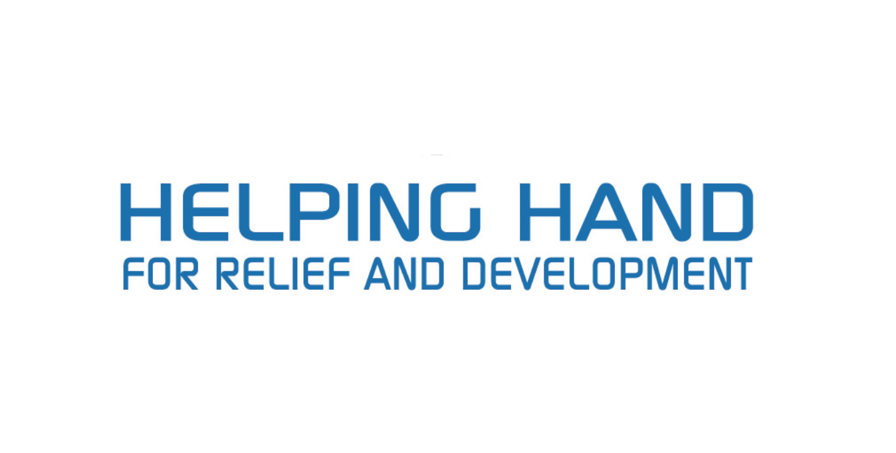
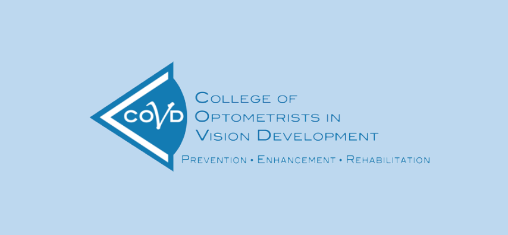

Hi, I'm Warisha
I'm a Human-Computer Interaction graduate currently leading design and partnerships at HumanitarianTracker while volunteering to slow the spread of COVID-19 as a UX designer for Helping Hands Community. I've worked for AT&T, Sofy.ai, Aerojet Rocketdyne and Integrus Architecture in addition to cofounding AbroadenSeattle. With each opportunity, I've learned new ways to galvanize global users around social good by considering how people navigate through space - from physical space to white space.

2020
Humanitarian Aid Delivery
Traveled to Jordan to support refugee and orphan programs

2019, 2020
United Nations General Assembly
Invited during high level week to crowdsource global projects and mentor innovators

2018, 2019
Forbes Under 30 Scholar
Recognized for using entrepreneurship to address global needs
2018
Husky 100
Awarded for using my university experience to uplift communities

2018
Conference Presenter
Presented UX research at COVD national optometry conference

2017
Garden Innovation
Hackathon
First place in the Microsoft sponsored event rethinking a garden experience
2016
Published Cesar Hill
Became a published author in the Monolith

2016
Diversity and Inclusion
Grant
Pitched AbroadenSeattle and won the $5,000 grant and mentorship

2015
Imagine Tomorrow
Design Competition
Placed second for designing a sustainable method of generating biofuels
Version 4.1 - Updated April 2020